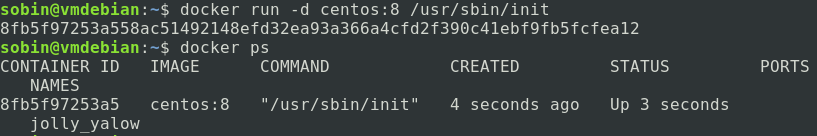
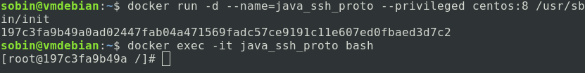
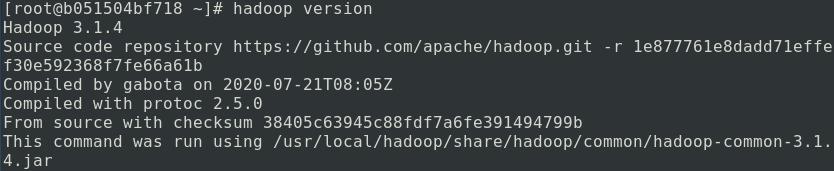

Dado que Hadoop es un software diseñado para clústeres, al aprender a usarlo inevitablemente nos encontraremos con la situación de configurar Hadoop en múltiples computadoras, lo que crea varios obstáculos para los estudiantes, principalmente dos:
- Costosos clústeres de computadoras. Un entorno de clúster compuesto por múltiples computadoras requiere hardware costoso.
- Difícil de implementar y mantener. Desplegar el mismo entorno de software en muchas computadoras es una gran cantidad de trabajo, y además es muy inflexible, difícil de redistribuir después de cambiar el entorno.
Para resolver estos problemas, tenemos una forma muy maduraDocker。
Docker es un sistema de gestión de contenedores que puede ejecutar múltiples "máquinas virtuales" (contenedores) como una máquina virtual y formar un clúster. Debido a que una máquina virtual virtualiza completamente una computadora, consume muchos recursos de hardware y es ineficiente, mientras que Docker solo proporciona un entorno de ejecución independiente y replicable. De hecho, todos los procesos en el contenedor aún se ejecutan en el kernel del host, por lo que su eficiencia es casi la misma que la de los procesos en el host (cercana al 100%).
Este tutorial utilizará Docker como entorno subyacente para describir el uso de Hadoop. Si no sabes usar Docker y no conoces una mejor manera, aprendeTutorial de Docker。
Instalación de Docker en Windows
Nota:Se recomienda a los usuarios de Windows que instalen Docker usando el esquema de máquina virtual.
Despliegue de Docker
Después de ingresar a la línea de comandos de Docker, extrae una imagen de Linux como entorno de ejecución de Hadoop. Aquí se recomienda usar la imagen de CentOS (Debian y otras imágenes pueden tener algunos problemas por ahora).
docker pull centos:8
Luego mediantedocker imagesel comando puede ver las imágenes locales actuales:

Ahora, creamos un contenedor:
docker run -d centos:8 /usr/sbin/init
Mediantedocker psse pueden ver los contenedores en ejecución:

Podemos hacer que el contenedor imprima Hello World:

Hasta aquí, indica que Docker se ha instalado e implementado correctamente.
Crear contenedor
Hadoop admite la ejecución en un solo dispositivo, principalmente en dos modos: modo independiente y modo pseudo-clúster.
Este capítulo explica la instalación de Hadoop y el modo independiente.
Configurar el entorno Java y SSH
Ahora crea un contenedor llamado java_ssh_proto para configurar un entorno que contenga Java y SSH:
docker run -d --name=java_ssh_proto --privileged centos:8 /usr/sbin/init
Luego entra al contenedor:
docker exec -it java_ssh_proto bash

Configurar la imagen:
sed -e 's|^mirrorlist=|#mirrorlist=|g' \
-e 's|^#baseurl=http://mirror.centos.org/$contentdir|baseurl=https://mirrors.ustc.edu.cn/centos|g' \
-i.bak \
/etc/yum.repos.d/CentOS-Stream-AppStream.repo \
/etc/yum.repos.d/CentOS-Stream-BaseOS.repo \
/etc/yum.repos.d/CentOS-Stream-Extras.repo \
/etc/yum.repos.d/CentOS-Stream-PowerTools.repo
Instalar OpenJDK 8 y el servicio SSH:
yum install -y java-1.8.0-openjdk-devel openssh-clients openssh-server
Luego habilita el servicio SSH:
systemctl enable sshd && systemctl start sshd
Si es un sistema Ubuntu, usa el siguiente comando para iniciar el servicio SSH:
systemctl enable ssh && systemctl start ssh
Hasta aquí, si no ha aparecido ningún fallo, se ha creado un contenedor prototipo que incluye el entorno de ejecución de Java y el entorno SSH. Este es un contenedor muy crítico. Se recomienda que primero salga del contenedor con el comando exit, luego ejecute los dos comandos siguientes para detener el contenedor y guardarlo como una imagen llamada java_ssh:
docker stop java_ssh_proto docker commit java_ssh_proto java_ssh
Instalación de Hadoop
Descargar Hadoop
Sitio web oficial de Hadoop:http://hadoop.apache.org/
Descarga de versiones de Hadoop:https://hadoop.apache.org/releases.html
En las pruebas actuales, las versiones 3.1.x y 3.2.x tienen mejor compatibilidad. Este tutorial utiliza la versión 3.1.4 como ejemplo.
Dirección del mirror de Hadoop 3.1.4, descarga el archivo comprimido tar.gz y tenlo listo.
Crear un contenedor Hadoop independiente
Ahora crea un contenedor hadoop_single usando la imagen java_ssh guardada anteriormente:
docker run -d --name=hadoop_single --privileged java_ssh /usr/sbin/init
Copia el paquete comprimido de Hadoop descargado al directorio /root del contenedor:
docker cp <你存放hadoop压缩包的路径> hadoop_single:/root/
Entra al contenedor:
docker exec -it hadoop_single bash
Entra al directorio /root:
cd /root
Aquí debería estar el archivo hadoop-x.x.x.tar.gz que se acaba de copiar; ahora descomprímelo:
tar -zxf hadoop-3.1.4.tar.gz
Después de descomprimir, se obtendrá una carpeta hadoop-3.1.4; ahora cópiala a un lugar común:
mv hadoop-3.1.4 /usr/local/hadoop
Luego configura las variables de entorno:
echo "export HADOOP_HOME=/usr/local/hadoop" >> /etc/bashrc echo "export PATH=$PATH:$HADOOP_HOME/bin:$HADOOP_HOME/sbin" >> /etc/bashrc
Luego sal del contenedor Docker y vuelve a entrar.
En este momento, el resultado de echo $HADOOP_HOME debería ser /usr/local/hadoop
echo "export JAVA_HOME=/usr" >> $HADOOP_HOME/etc/hadoop/hadoop-env.sh echo "export HADOOP_HOME=/usr/local/hadoop" >> $HADOOP_HOME/etc/hadoop/hadoop-env.sh
Estos dos pasos configuran las variables de entorno integradas de Hadoop; luego ejecuta el siguiente comando para determinar si tuvo éxito:
hadoop version

Hasta aquí, significa que tu versión independiente de Hadoop se ha configurado correctamente.
Haz clic para compartir notas
<p style="font-size:14px;">La nota debe ser una extensión del contenido de este artículo.</p><br> <p style="font-size:12px;"><a href="../tougao.html" target="_blank">Reenvío de artículos, haz clic aquí</a></p> <p style="font-size:14px;"><a href="./runoob-user-test-intro.html" target="_blank">Cómo obtener el código de invitación de registro</a></p> <h3 class="text-muted"><i class="fa fa-info-circle" aria-hidden="true"></i> Antes de compartir notas debes <a href=".." class="runoob-pop">iniciar sesión</a>.</h3> <p><a href="./runoob-user-test-intro.html" target="_blank">Cómo obtener el código de invitación de registro</a></p>